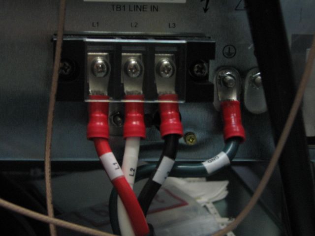

Measure voltage across the terminal block where the RF Amp receives power.
Place a test lead at the ground terminal.
Test for voltage across all the other connected terminals (L1, L2, L3).
Confirm 0 volts before proceeding.
Illustration 5: Terminal Block
